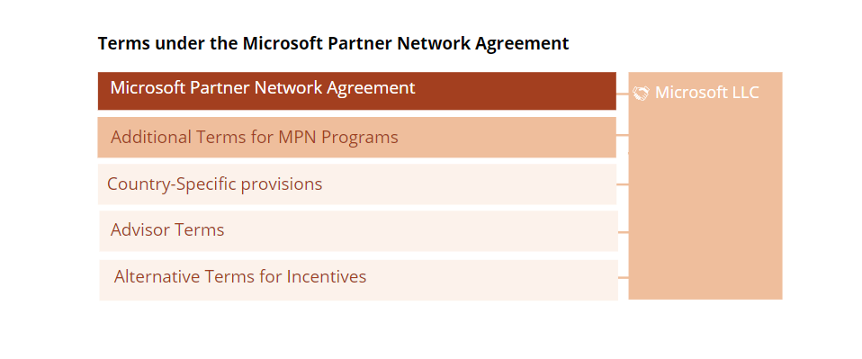

To obtain the right to resell Microsoft Online Services you must enter into the Microsoft Partner Agreement
(hereinafter referred to as MPA) with Microsoft. This is our review of the MPA for “Indirect Resellers”, which is
the contract version applicable to resellers (Cloud Service Provider, “CSP”) who are authorized to sell through a
distributor (ala Arrow, Crayon, etc.).
The review does not cover the version of the Microsoft Partner Agreement (referred to here as MPA, Direct Bill) that
applies to resellers that acquire the right to order directly from Microsoft and where the reseller establishes its
own technical solutions for ordering and settling directly through Microsoft's Partner Portal.
Note that if it is desired for various reasons, you may be both CSP Direct Bill, and at the same time enter into
an agreement with a distributor, so that you may resell as an Indirect reseller.
The main difference between MPA "Direct Bill" and MPA "Indirect reseller" is mainly that the MPA "Direct Bill" has
several provisions related to ordering from Microsoft, payment regulations, etc. This since direct bill CSP has the
right to order and pay for consumed serviced directly to Microsoft. In addition, there are some additional terms
related to how resale can be done. For the most part, the balance is similar, except that a " Direct Bill" reseller
may, upon termination of the agreement, continue to resell the Online Services to active customers in accordance
with the termination for convenience clause under the applicable end customer's MCA or maximum for 12 months, while
an " Indirect Reseller" must stop all resale the same day. In addition, the incentive models for a " Direct Bill"
reseller are better than for an " Indirect Reseller".
The Microsoft Partner Agreement (MPA) consists of three documents ("Core Terms", "Channel Terms", and the "Channel
Authorization") that must be accepted. This is done by signing an "Enrollment" with Microsoft, which corresponds to
an order form, and is normally executed via the Microsoft’s Partner Portal. This constitutes the "agreement".
In addition, it’s required to enter into an agreement with a “distributor”, that you order through and that invoice
you for end customer consumption. This is referred to as “Additional Terms” in Microsoft Partner Agreement. Since
the distributors agreement with Microsoft (which equals the MPA for “direct bill” imposes an obligation on the
distributor to flow down all term and conditions that apply between the distributor and Microsoft, you as a reseller
will be introduced to additional terms related to the resale of Microsoft Azure services, through your agreement
with the reseller. This is mainly payment terms that apply between the distributor and Microsoft (for instance there
is a 25-day deadline for filing complaints to any invoiced/consumption measurements from Microsoft), a few “missing”
terms and conditions in the Channel Authorization, and a number of clauses from the “Guide to the online Services
and Software Channel Authorization” document that applies for distributor/direct bill CSP’s.
The MPA, supplemented with additional terms introduced by the distributor, consist of:
In addition, is also required to enter into the Microsoft Partner Network Agreement (MPN) with Microsoft, which
allows you to become a member of the Microsoft Partner Network. This is thus a prerequisite for having a valid
Microsoft Partner Agreement. This separate agreement provides access to the Microsoft Partner Portal, where you can
find relevant information, offers (can participate in promotions, etc.), can make orders, etc. The Microsoft Partner
Network Agreement also has additional terms that apply if you wish to be an advisor to customers and potential
customers.
It consists of:

And in addition to Microsoft Partner Agreement, your agreement with the distributor and Microsoft Partner Network
Agreement, Microsoft Partner Agreement states that the Microsoft Customer Agreement is also applicable to you as a
reseller, if you use or resell the MS Online services “Azure Partner Shared Services” or “Microsoft Azure Stack Hub
Offer Terms”. Therefore, you should review which rights and obligations the Microsoft Customer Agreement imposes on
you in such situations.
A detailed review of the Microsoft Partner Agreement, including Core Terms, Channel Terms, Channel and the Guide to
Channel Authorization follows under Detailed Walkthrough. Each of the sections provides a general description of
what each document regulates. In the review we have categorized all comments in three categories:
Obligations where you should establish procedures to ensure compliance,
Note
Mirror against distributor
Obligations that should be mirrored towards the end customers:
Key findings in the Microsoft Partner Agreement
Relationship with the end customers
The reseller is obliged to ensure that customers accept Microsoft's terms and conditions and confirm this in the
Microsoft Partner Portal for each customer. This is not an obligation in the MPA, but will probably be
introduced by the distributor through the Additional Terms (the separate agreement between you and your
distributor) The Microsoft Customer Agreement and associated terms (Product Terms, SLA, DPA, etc.) must thus be
flowed down to the reseller's own customers in the agreement entered into between you as the reseller and the
individual end customer, so it establishes a direct agreement between Microsoft and the individual end
customer. Since the end customers’ acceptance of the Microsoft terms and conditions establishes a
(separate) direct agreement between Microsoft and each individual end customer, both Microsoft and each
individual end customer may be able to enforce rights and obligations in relation to each other directly. This
means that the reseller will not be held liable by Microsoft for any breach of contract by an individual end
customer.
The reseller is obliged to ensure that all orders, both when establishing its end customer agreement and
subsequent additional orders, are made in writing and can be documented to Microsoft (and the distributor). This
includes the duration of the Services. This is referred to as the "Customer Purchase Commitment" in the MPA.
Although a direct agreement is entered into between Microsoft and each individual end customer, the reseller
remains responsible for payment for all consumption of the online services made by each individual customer to
the distributor, regardless of whether the reseller receives payment from the individual end customer or not.
Microsoft may reject new customers for legal reasons or if there are reasonable grounds to believe that the
Customer will increase the risk for Microsoft. Microsoft may also suspend or terminate end customer
subscriptions in accordance with law, or regulations in the MPA or MCA (e.g., if the customer is in
breach).
Microsoft is not obligated to accept orders or accept desired quantity or future supplemental orders. Therefore,
you should notify Microsoft (through your distributor) of potential orders, to ensure availability. This is
especially important in case of large volume orders.
The reseller must establish help desk/support for own customers to whom it resells, and must ensure that
customers do not contact Microsoft directly. When customers contact the reseller in connection with errors, the
reseller must set an initial categorization of the error. This must be notified to your distributor.
Topics that should be addressed towards the distributor (in the Additional
Terms)
All orders to Microsoft shall be submitted through the Distributor.
The online-services, and countries you are allowed to resell to, must be agreed upon with the distributor in the
Additional Terms.
Service fees are not determined between you and Microsoft in the MPA, so they should be agreed upon with the
distributor (in the Additional Terms). It’s probably appropriate to agree that Microsoft’s list prices apply (as
they to in the relationship between Microsoft and the distributor). Additionally, it should be agreed upon how
Microsoft bonuses (Partner Earned Credits) will be shared between you as reseller and your distributor. Partner
Earned Credits for the distributor amount to 15% (and this will be received automatically as long as your and
the distributor’s names are registered as reseller in the subscription for each individual end customer.
The list price is subject to change with a 30-day notice, or faster for non-Microsoft products. This applies
between the Distributor and Microsoft, and what should apply between the reseller and distributor should be
agreed upon.
Also, be aware that Microsoft may impose a "credit limit" on the distributor, meaning orders for online services
exceeding this limit will be declined unless specific consent is granted on a case-by-case basis. The limit
applicable to the reseller should be agreed upon in Additional Terms.
As a general rule, Microsoft invoices the distributor monthly, with a 60-day payment term. The due date for the
reseller must be agreed upon in Additional Terms.
Microsoft does not offer any indemnification protection to reseller in the MPA but does so to the distributor in
the MPA for "direct bill". This means that the reseller must obtain the same guarantee from the distributor
through Additional Terms.
Note that there is a 25-day deadline for the distributor to notify Microsoft if they disagree with the
consumption measurements Microsoft itself uses as the basis for the fees the reseller must pay to Microsoft each
month. The deadline for the reseller must be agreed upon in Additional Terms. Also, note that even if you notify
within the deadline, you must still pay the invoiced amount to Microsoft, otherwise, you risk suspension or
termination. It is therefore not allowed to withhold fees or offset, etc. The agreement does not impose any
deadline on Microsoft regarding how quickly they must repay overpaid amounts.
In addition to the above, there are several other matters that should be agreed upon with the distributor, for
example, that the distributor's portal must meet the technical requirements that Microsoft requires to
communicate with the Microsoft Partner portal, including access controls to prevent unauthorized access.
Commercial aspects
In principle, the reseller may agree on the term of the services with the end customer, but for some services
Microsoft requests lock-in periods. And for some services, there is an automatic renewal after the end of the
subscription period. The reseller must check this for each service it resells.
If a lock-in period/minimum quantity is agreed for a end customer, this must be paid by the reseller even if the
reseller’s agreement ceases due to a material breach by the reseller itself or due to a material breach of the
MCA by the end customer, or if the end customer terminates the agreement with the reseller without cause before
the lock-in period is over.
In principle, the reseller determines the prices for each end customers unless MS gives discounts to public
customers, which in that case must be given to the customers in full . Unless Microsoft provides discounts to
individual end customers, the reseller shall pay for the consumed quantity in accordance prices agreed with the
distributor.
The fees payable is based on consumption measurements made by Microsoft itself.
Predictability / legal
The terms in the Core Terms, the Channel Terms and Channel Authorization are subject to change by Microsoft with
180 days' notice. Therefore, you should monitor changes that are introduced, including changes in Additional
Terms introduced by the distributor.
Microsoft may terminate the MPA for convenience/the right to resell with 30 days' written notice. You then lose
the right to resell within 24 hours and must transfer existing customers to another reseller or Microsoft. This
should be mirrored towards end customers.
Microsoft may further change or remove products from Online Services with 30 days' notice. This also should be
mirrored towards end customers.
Microsoft may terminate the agreement due to a "breach", and it is not required that this breach is "material."
If the breach is not remedied within 30 days, Microsoft may terminate for cause, and you will then lose the
right to resell to new customers immediately and to existing customers within 12 months. Microsoft may also
claim damages for any loss.
Termination for cause may also take place immediately (without deadline/right to remedy the breach) in the event
of a breach of confidentiality, breach of Microsoft's IPR, or non-compliance with business conduct requirements
(compliance with laws and regulations concerning for example anti-corruption, training, etc.). Termination for
cause may also take place immediately without the right to remedy if previous breaches occur again. This
emphasizes the importance of keeping track of all obligations, which is the purpose of this review.
Microsoft may also stop access to the Microsoft Partner Portal and other systems and tools if the reseller is in
material breach. Unlike termination for cause, the threshold here is “material breach”. However, Microsoft will
notify in advance of such suspension only when it is "reasonable."
Note that the normal limitation of liability (limited against indirect loss) does not apply to unauthorized use
of the other’s IPR, resale in violation of the provisions of the agreement, breach of compliance obligations or
breach of confidentiality duty. This means that the reseller's liability for the most practical purposes is
unlimited, which underlines the need to comply with the obligations of the agreement. There is no limitation of
liability in monetary value.
The contracting party is mainly Microsoft Ireland, and Irish law is the choice of law.
Routines that should be established
The MPA contains several compliance obligations. Since non-compliance can result in both suspension and/or
termination for cause, as well as unlimited liability for damages, it is important to familiarize yourself with and
comply with these obligations. For instance:
Microsoft's Trademark and Brand Guidelines for use of Microsoft trademarks
Detailed business integrity requirements such as compliance with export control rules, legislation related to
environmental protection, IPR, HSE, anti-corruption legislation, anti-money laundering rules, internal control
rules (e.g. under GDPR), bookkeeping obligations, etc.
Requirements for completion of Microsoft training in anti-corruption
Compliance with Microsoft's own code of conduct
Requirements for reporting. There is a risk that orders may be suspended or that payment may be withheld in case
of noncompliance with these requirements.
Requirements for complete documentation of the reseller's fulfilment of its obligations under the MPA, including
information about customers, orders, quantities, etc.
Privacy and Data protection
Each party acts as data controller with respect to any personal data exchanged between the reseller and
Microsoft under the Microsoft Partner Agreement. The nature, purpose and category of personal data must be
stated in the specific form filled out when the reseller register as a reseller. The reseller must ensure that
it has a legal basis to be the controller of that personal data and to disclose any such personal data to
Microsoft.
Customer data shall be defined in the individual customer agreement. Prior to receiving customer data, which is
also personal data, the reseller shall ensure that both the reseller and Microsoft have a legal basis for
processing such personal data. The reseller and Microsoft will be independent processors for processing of such
personal data. This means that Microsoft will not be a subcontracted processor of the reseller, but the reseller
is responsible for establishing a basis for Microsoft being a data processor. Therefore, the reseller must
ensure that the customer agreement is concluded, so that a data processing agreement is established between the
customer and Microsoft. If the reseller also processes this personal data, a data processing agreement between
the reseller and the customer must also be established.
Furthermore, as part of the MCA between the end customers and Microsoft, a separate DPA is established between
these parties.
Key findings in the Microsoft Partner Network Agreement
The right to resell Microsoft Online services presupposes a valid Microsoft Partner Network Agreement. Microsoft
may terminate the Microsoft Partner Agreement for cause in the event of breach of the Network Agreement.
The Network agreement may be terminated by Microsoft without cause with 30 days' notice. If the Network
agreement is terminated, the Microsoft Partner Agreement will also terminate automatically.
Termination for cause may take place immediately in the event of non-compliance with/breach of duties such as
Privacy and Data protection, Confidentiality, Business Integrity Principles, breach of the other's IPR, or other
breach that cannot be remedied within a reasonable time. There is no requirement that the breach of contract
must be material or that you are given the opportunity to remedy such breach. Since the Microsoft Partner
Network Agreement is a prerequisite for the Microsoft Partner Agreement, this entails an increased risk that the
Microsoft Partner Agreement may terminate, compared to what follows from the Microsoft Partner Agreement alone.
Again, this underlines the importance of having under control all obligations in the agreement and creating
procedures for complying with these obligations.
Microsoft may modify the Microsoft Partner Network Agreement, Microsoft materials (content, information, sales
tools, documentation, marketing materials such as logos, etc.) or a program (offers, incentives, promotions,
etc.) etc. with 30 days' written notice.
As the above key findings demonstrate, the reseller in this contractual relationship has relatively little
predictability in the T&C’s while having extensive obligations. In the following you will find our detailed
review of each individual agreement document, as well as our suggestions as to how to manage the risks. The risks
may be managed either by establishing internal procedures to ensure compliance with the obligations, obligations to
be mirrored against the distributor in the Additional Terms or by mirroring risks or obligations in the agreements
with its own end customers.
NOTE – the purpose of this document is to provide an overview of the rights and obligations in these agreements
and thus help you to understand them as a whole. It is not easy to make a summary that would address all the
details of the terms and conditions in a way that would cover all resellers’ needs, so you should also read
through the terms and conditions in their entirety if you want to maintain full control.